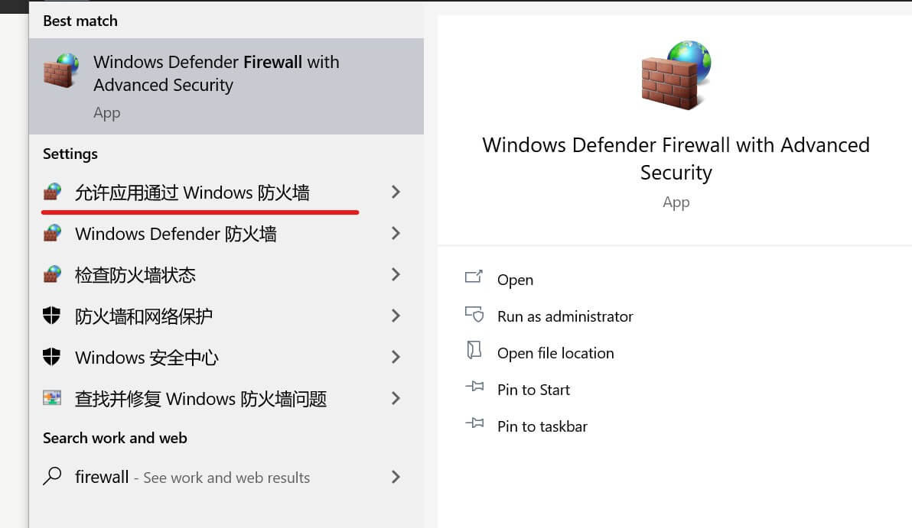
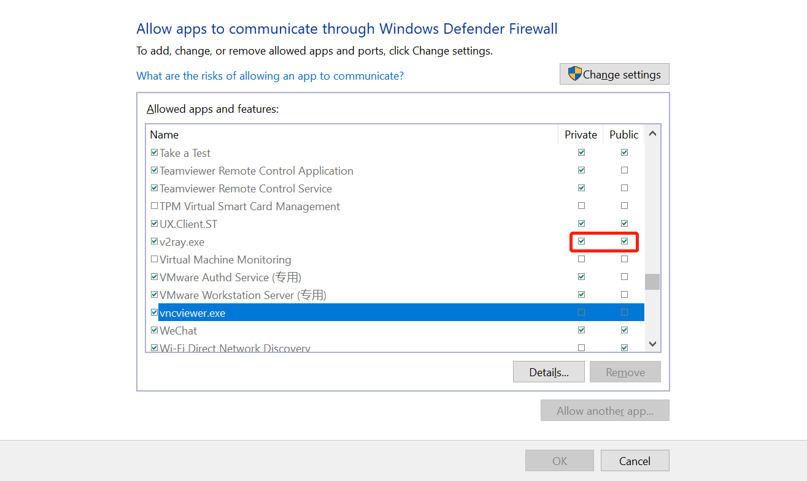

这篇文章上次修改于 805 天前，可能其部分内容已经发生变化，如有疑问可询问作者。
在升级到 wsl 2 后发现一些网络问题和之前的 wsl 不一样了，主要是 DNS 解析和 wsl 和 Windows 网络互访问题，这里介绍如何处理。
DNS 解析
wsl 2 使用的 DNS 解析服务器设置在文件：/etc/resolv.conf 内设置，这是一个 link 文件，真正的文件路径是：/run/resolvconf/resolv.conf，这个文件是每次 wsl 启动时自动生成的，内容如下：
# This file was automatically generated by WSL. To stop automatic generation of this file, add the following entry to /etc/wsl.conf:
# [network]
# generateResolvConf = false
nameserver 172.24.144.1nameserver 后面的就是指定的 DNS 服务器地址。我发现有时候分配的服务器地址是无效的，如：127.0.0.53，使用 ping 来测试发现提示无法解析地址。需要设置一个固定的 DNS 地址，方法如下：
新建文件：
/etc/wsl.conf，内容如下：[network] generateResolvConf = false
以上配置好就不会自动创建 /run/resolvconf/resolv.conf 文件了。
退出 wsl，关机然后重新启动：
exit
wsl --shutdown
wsl
删除 link 文件：/etc/resolv.conf:
rm /etc/resolv.conf
然后新建 /etc/resolv.conf 文件，内容如下，可自定义 nameserver 地址：
nameserver 114.114.114.114
再次退出 wsl，关机然后重新启动：
exit
wsl --shutdown
wsl
查看 /etc/resolv.conf 文件是否是之前自定义的地址：
cat /etc/resolv.conf
测试网络服务：
ping niekun.net
参考链接：https://github.com/microsoft/WSL/issues/5256#issuecomment-666545999
网络访问配置
以前使用 wsl 时 Linux 子系统和 Windows 主机的网络好像是直接互通的，比如我在 Windows 下建立了一个 http 网页 http://127.0.0.1:6000，可以在 Linux 子系统下直接访问地址 http://127.0.0.1:6000，同理对于 Windows 主机访问 Linux 子系统的服务也是可以使用 localhost 直接访问的。
在升级到 wsl 2 后发现这一特性没有了，无法直接通过 localhost 地址来互通，查询官方说明关于wsl 2 访问网络服务 的方法可以实现访问，但是每次关机后 wsl 和 Windows 本地地址会发生变化不方便使用。
可以设置静态 IP 来固定地址。Windows 终端下执行下面命令：
在 wsl 下增加 IP 地址：192.168.50.16，名称为：eth0:1:(以 Ubuntu 系统为例)
wsl -d Ubuntu -u root ip addr add 192.168.50.16/24 broadcast 192.168.50.255 dev eth0 label eth0:1
在 Windows 10 下增加一个 IP 地址：(此命令需要管理员权限执行)
netsh interface ip add address "vEthernet (WSL)" 192.168.50.88 255.255.255.0
执行后，在 wsl 下通过 IP：192.168.50.88 访问 Windows 服务。在 Windows 下通过 IP：192.168.50.16 访问 wsl 服务。
完成后再终端使用 ipconfig 查看设置：
Ethernet adapter vEthernet (WSL):
Connection-specific DNS Suffix . :
Link-local IPv6 Address . . . . . : fe60::b525:6b90:8fb0:f513%58
IPv4 Address. . . . . . . . . . . : 172.23.64.1
Subnet Mask . . . . . . . . . . . : 255.255.240.0
IPv4 Address. . . . . . . . . . . : 192.168.50.88
Subnet Mask . . . . . . . . . . . : 255.255.255.0
Default Gateway . . . . . . . . . :以上两个命令可以写在一个 powershell 脚本文件内，脚本内设置管理员权限执行，由于需要管理员权限所以无法通过建立 shortcut 放到开机自启动文件夹来自动启动址。
wsl_ip.ps1 脚本内容如下，会自动请求管理员权限：
if (-NOT ([Security.Principal.WindowsPrincipal][Security.Principal.WindowsIdentity]::GetCurrent()).IsInRole([Security.Principal.WindowsBuiltInRole] "Administrator"))
{
$arguments = "& '" +$myinvocation.mycommand.definition + "'"
Start-Process powershell -Verb runAs -ArgumentList $arguments
Break
}
wsl -d Ubuntu -u root ip addr add 192.168.50.16/24 broadcast 192.168.50.255 dev eth0 label eth0:1
netsh interface ip add address "vEthernet (WSL)" 192.168.50.88 255.255.255.0
为了方便使用，可以将脚本路径加入系统 PATH 中，这样可以方便的在终端直接运行脚本，PATH 设置参考：https://blog.niekun.net/archives/413.html
完成后打开终端直接执行命令：wsl_ip 即可快速设置 IP。
如果在 powershell 中执行脚本时报错，可能是由于当前系统设置的脚本执行策略有问题，管理员权限打开 ps 后执行以下指令：
Set-ExecutionPolicy -ExecutionPolicy RemoteSigned
更多关于系统执行策略设置参考官方文档：About Execution Policies
wsl 使用主机代理
wsl 可以直接使用 Windows 主机搭建的代理服务，ip 地址就使用上面我们创建的 Windows 端的地址即可。
wsl 中编辑 .bashrc 文件:
vim ~/.bashrc
将下面代码加入文件：
alias proxy='export all_proxy=socks5://192.168.50.88:1080 && export http_proxy=http://192.168.50.88:1082 && export https_proxy=http://192.168.50.88:1082'
alias unproxy='unset all_proxy && export http_proxy= && export https_proxy='保存文件后，重新载入配置：
source ~/.bashrc
运行命令测试alias是否生效：
proxy
如果无法使用代理，可能是 Windows 防火墙限制代理软件的访问权限，Windows 下打开允许应用通过 Windows 防火墙设置：

将对应代理软件打开 private 和 public 访问权限：

再次在 wsl 中测试 proxy 是否生效。
没有评论